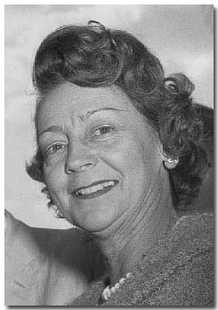
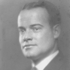
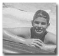
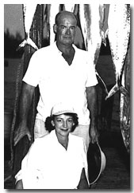
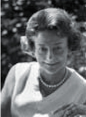
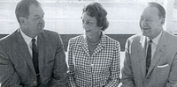
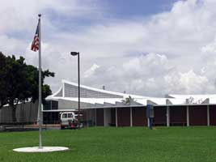
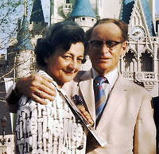
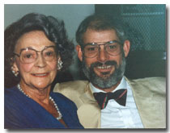
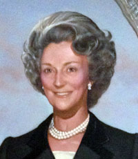

|
 |
|
Lucy E. Henderson
Lucia Maria Ernst (1910 - 1991) was a philanthropist and supporter of education in Florida. She was the wife of Alexander D. Henderson, a businessman and philanthropist who was one of the founders of the A. D. Henderson Foundation and Saint Andrew’s School in Boca Raton, Florida. |
|
| Important Facts | |
| September 12, 1910 | Lucia Maria Ernst was born in Brooklyn, New York. She was the daughter of Lucia Berth Doering and Joseph Ernst. |
 |
| 1930 | Lucy worked for Avon Products as a secretary in New York City where she met her future husband, Alexander Dawson Henderson Jr.. | |
| April 3, 1930 | According to the U.S. Census, Lucy was employed as a bookkeeper in the perfume manufacturing industry while living with her family on West 163rd Street in Manhattan, New York. Source: New York. Census 1930. | |
| July 31, 1934 | Lucy Ernstand Alexander D. Henderson traveled on the SS Southern Cross from Hamilton, Bermuda to New York. Source: New York Passenger Lists, 1820-1957. | |
| March 28, 1936 | Lucy married Alexander Dawson Henderson Jr. in Manhattan, New York City, where she continued to work for Avon Products. For their honeymoon, on March 28, 1936, the couple traveled on the SS Santa Rosa from New York to Los Angeles, California. Source: Marriage • New York, New York City Marriage Records, 1829-1938. | |
| April 17, 1940 | According to the U.S. Census, Alex and Lucy were living at Pelham Manor, a affluent village located in Westchester County, New York. Source: New York. Census 1940. |
 |
| March 9, 1946 | A. Douglas "Doug" Henderson was born in New York City. | |
| 1946 | When her husband retired from Avon, Lucy Henderson and their infant son moved with him from New York City to Fort Lauderdale, Florida. | |
| April 23, 1949 | To the right is a photo of Alex and Lucy with their day’s catch at Riviera Beach in Florida. |
 |
| April 20, 1950 | According to the U.S. Census, Alex (55), Lucy (39), and Doug (14) were living near 1531 NE 15 Court, Fort Lauderdale, Florida. Source: United States Census 1950 for Boward County, Florida. | |
| 1952 | The family built a white, two-story house at 1011 Hillsboro Mile (A1A), overlooking the Atlantic Ocean. During her years in Florida, Lucy became actively involved in philanthropic activities. | |
| 1952 | Lucy Henderson, with her husband Alexander D. Henderson, helped found the Hillsboro Country Day School, the Henderson Clinic in Fort Lauderdale, and the St. Andrews School in Boca Raton. | |
| 1959 | The A. D. Henderson Foundation was founded in 1959 by her husband, Alexander D. Henderson, and Lucy E. Henderson. The Foundation supports early childhood programs, family focused services, and systems change efforts working alongside community partners soour communities can be places where all children thrive. Source: A. D. Henderson Foundation website. | |
| 1961 | Alexander D. Henderson was one of the founders of Saint Andrew’s School in Boca Raton. Lucy was a trustee and continued to support the school for the rest of her life. |
 |
| July 9, 1964 | Alexander D. Henderson died at Massachusetts General Hospital in Boston, Massachusetts. | |
| 1965 | After Mr. Henderson died in 1964, Mrs. Henderson continued her involvement in civic affairs and established the Alexander D. Henderson University School at Florida Atlantic University in her late husband’s name. | |
| September 30, 1965 | Lucy donated $750,000 to the Florida Atlantic University Endowment Corporation in memory of her late husband, Alexander D. Henderson. Source: Sun-Sentinel, 1965. | |
| 1965 and 1966 | Lucy was the Hillsboro Mile Community Chairman for the Heart Fund of Broward County. |
 |
| February 25, 1966 | Lucy was welcomed to the Board of Trustees of the Debbie-Rand Foundation, Inc., which sponsors the Boca Raton Community Hospital, and she continued to support the foundation and hospital for the rest of her life. | |
| Lucy helped found the Discover Center in Fort Lauderdale, Florida, and started the first dyslexia clinics in the Palm Beach County school system. | ||
| Lucy Henderson continued to support Saint Andrew’s with significant gifts for buildings, faculty housing, the Annual Fund, and endowment. Source: Saint Andrew’s 2001–2002 Endowment Fund Contributions. |
 University School in Boca Raton, Florida. |
|
| November 1966 | Lucy was appointed a trustee of FAU. | |
| June 3, 1967 | Granddaughter Lucia Angeline Henderson was born. | |
| December 1966 | The Board of Directors of the FAU Endowment Corporation met in the new administration building. Board Chair Thomas Fleming, Lucy Henderson Edmondson, and President Williams were present at this meeting. Source: Florida Atlantic University, The College History Series. | |
| December 1, 1968 | Lucy E. Henderson made a gift to the State and Florida Atlantic University to establish the Alexander D. Henderson University School in Boca Raton, Florida. The school was officially dedicated on this date, and Lucy received an honorary degree of Doctor of Humane Letters for her dedication to education. The school opened on 23 acres of campus land. The new building had 14 pie-shaped classrooms with soundproof walls and carpeted floors. Television cameras in each classroom allowed taping of both student and teacher “performances.” Source: Florida Atlantic University, The College History Series. |
 November 1972 |
| Lucy wrote a speech on the back of an envelope which she apparently delivered in the spring or summer of 1968: “I stand before you tonight with mixed emotions - I was here at the beginning of this school in 1953 when Mr. Henderson started with six students, one of them was my son. Then the present buildings were erected on this site in 1956. Now we are moving on to the FAU campus this coming September. It is going to be very interesting for me to sit on the sidelines and watch its development. I believe Hillsboro Country Day School has done a great job but has reached the point where it cannot progress any further. On the FAU campus and as part of the university I believe it has great potential. I want to thank each and every one of you for being here tonight and sharing this moment with me. Bless you.” |
 |
|
| 1968 | Lucy married Thomas E. “Tex” Edmondson in Las Vegas, Nevada. |
Forest Lawn Memorial Gardens Fort Lauderdale, Florida |
| Early 1970s |
Lucy was a founder of Planned Parenthood of South Palm Beach and Broward Counties and remained a supporter and contributor for life. Planned Parenthood’s library in Boca Raton was named in her honor.
Mrs. Henderson Edmondson founded the Discovery Center and started the first dyslexia clinics in the public schools of Palm Beach County. |
|
| October 25, 1991 | Lucia Henderson Edmondson died of heart failure at Boca Raton Community Hospital in Florida. Her burial was conducted by the Kraeer Funeral Home in Boca Raton. She was interred in the same crypt as her husband, Alexander D. Henderson, at Forest Lawn Memorial Gardens Central in Fort Lauderdale, in Mausoleum Unit 1, Section No. 67, South. Source: Obituary in The Miami Herald, October 28, 1991, page 21. |
 (painting from Foundation office) |
| October 29, 1991 | Memorial services were held in the Saint Andrew’s School Chapel in Boca Raton, Florida. Source: October 27, 1991, The New York Times, p. 34; Florida Death Index. | |
| 1992 | The A.D. and Lucy Henderson Endowment Fund was established through a bequest from Lucy Henderson for general purposes in 1992. Her gift more than doubled the school’s endowment and was the largest donation ever received. Mrs. Henderson was a long-time supporter of Saint Andrew’s School. Source: Saint Andrew’s School website. |
Last update: October 13, 2026